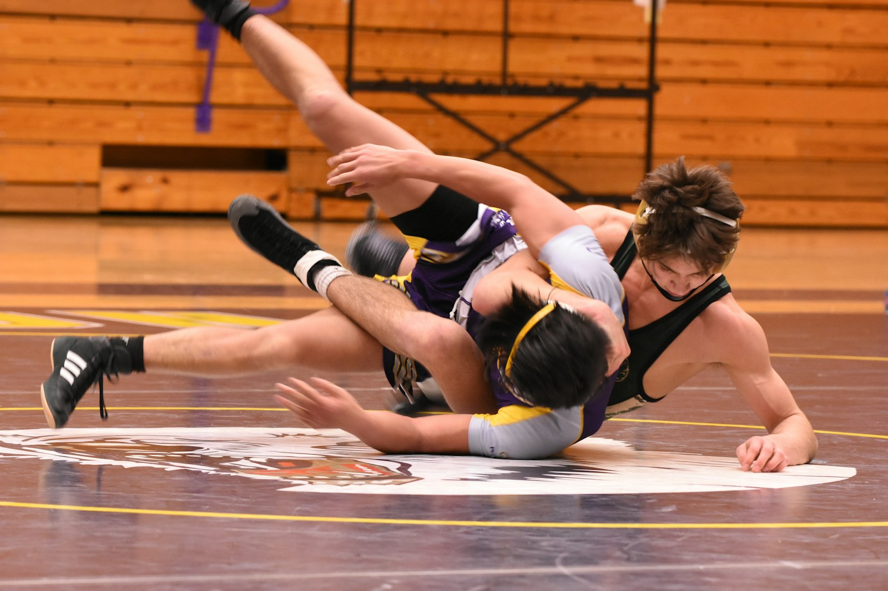

Мусаева Эльмира Ашурбеговна
Инструктор лечебной физкультуры, методика СИАС
Лечебная гимнастика по методике СИАС: сколиоз и осанка у детей и взрослых, лечебная физкультура для детей.
2 500 ₽
Лечебная гимнастика по методике СИАС: сколиоз и осанка у детей и взрослых, лечебная физкультура для детей.
С чем работаем
Ради чего всё это
Что получится достичь, зависит от диагноза и состояния — врач скажет это после осмотра и составит план под вашу цель.

Спортивная реабилитация
Выстроенная программа восстановления для спортсменов: без осложнений и с быстрым возвратом к привычным тренировкам.
Удобно
Если после операции или травмы тяжело выходить из дома. Приём — 4 000 ₽.
Курс лечения можно оплатить частями. Условия подскажет администратор.
Выдадим справку для налоговой — часть расходов на лечение вернётся.
Лечебная физкультура для детей, гимнастика по методу СИАС при сколиозе, детские стельки.
Общество с ограниченной ответственностью «Центр восстановительной медицины «ОРТО-РЕКАВЕРИ» (ОГРН 1210500012392, ИНН 0572029293). Адрес: 367015, Республика Дагестан, г.о. город Махачкала, г. Махачкала, пр-кт Имама Шамиля, д. 35А, этаж 1. Лицензия на медицинскую деятельность № Л041-01172-05/00620772 от 12.10.2022, выдана: Министерство здравоохранения Республики Дагестан. Электронная почта для обращений: orto_recovery1805@mail.ru. Информация на сайте не является публичной офертой и не заменяет консультацию врача. Демо-версия сайта, подготовлена для обсуждения с центром.
Пример концепции. Фото врачей, процедур и кабинетов — центра (фотосессия 2024 со старого сайта); фото на первом экране, «Стопа», «Реабилитация» и борьба — Unsplash. Цены — прайс клиники.